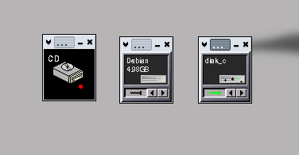
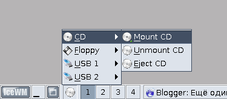
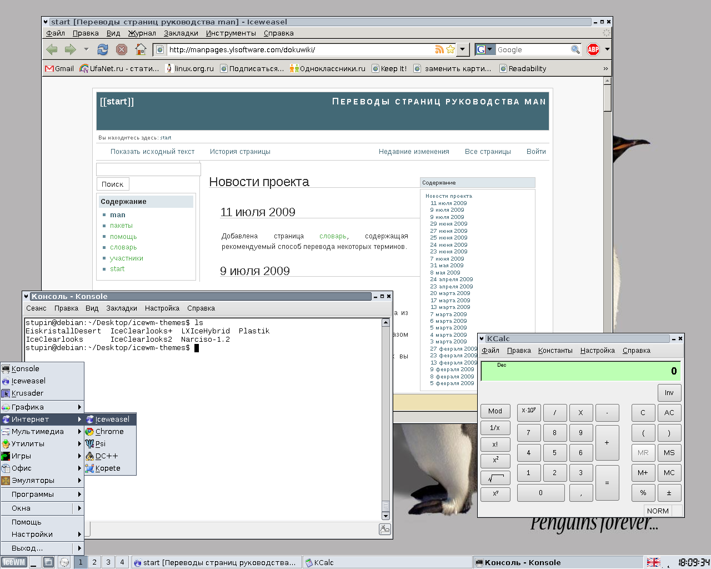
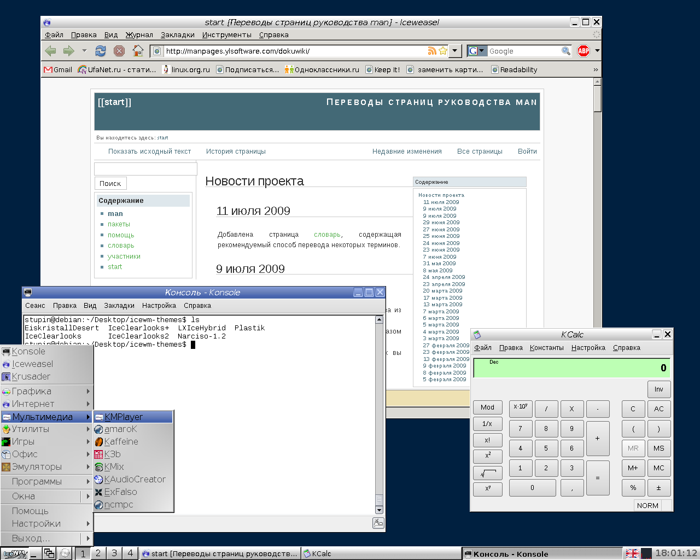
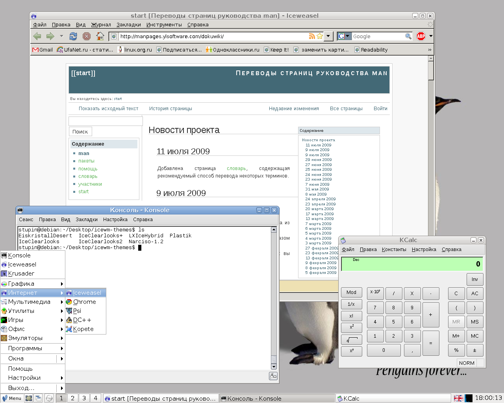
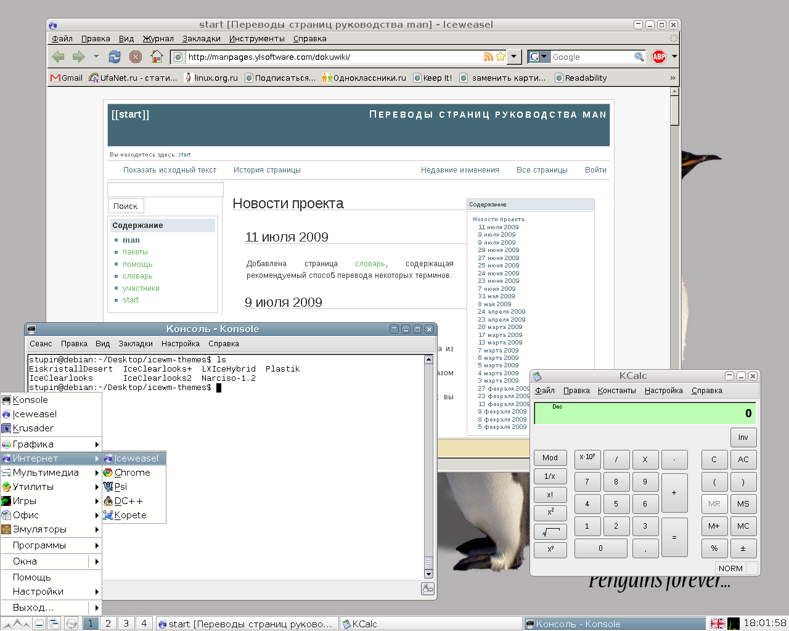
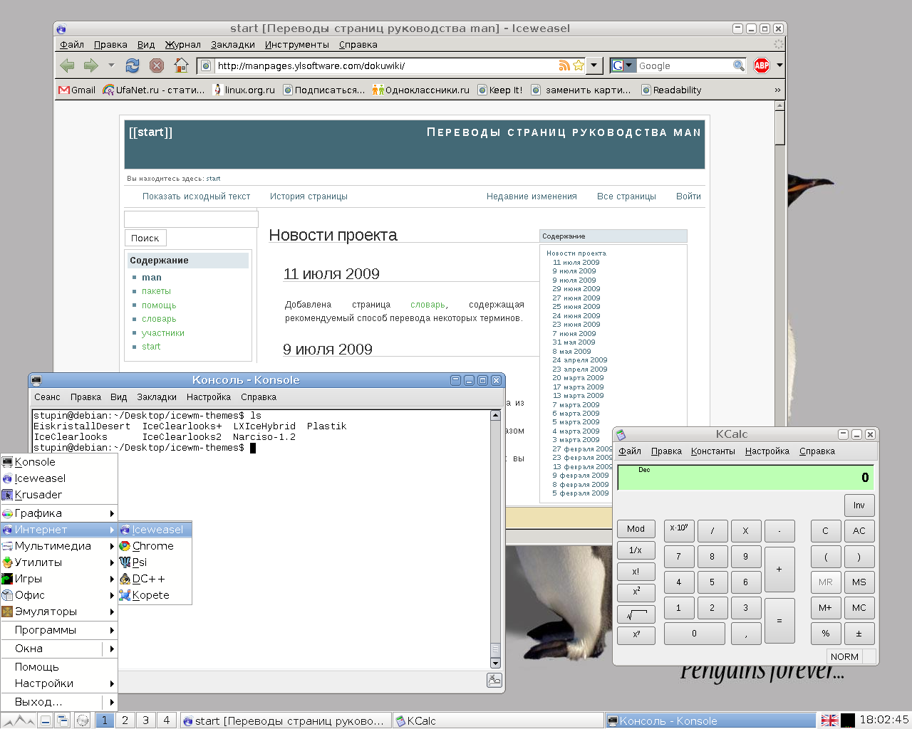
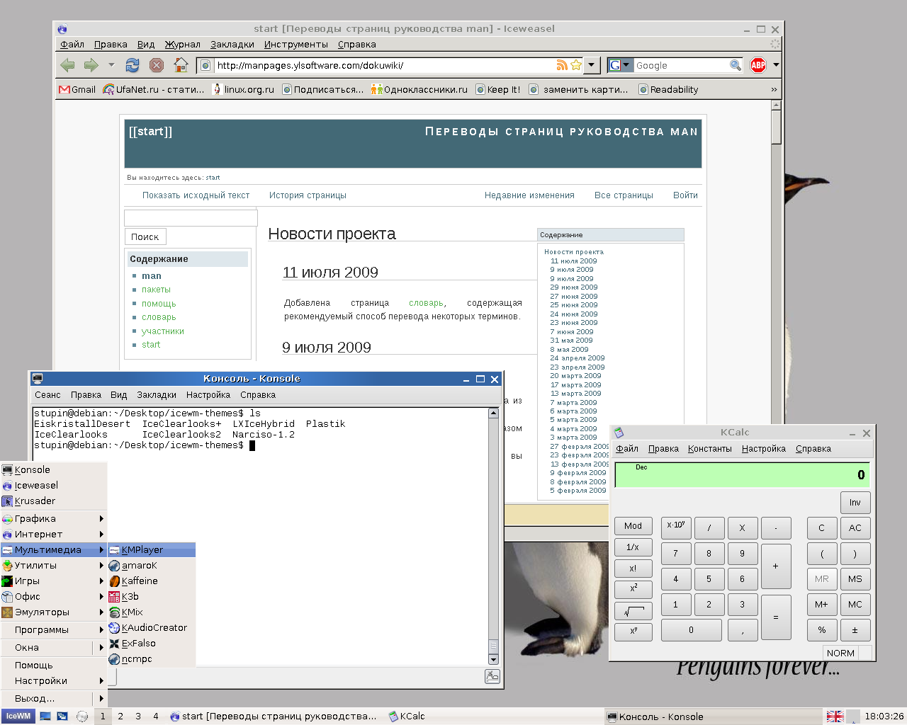
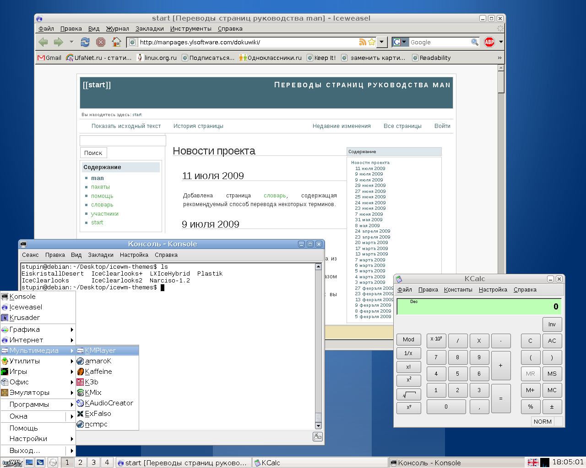
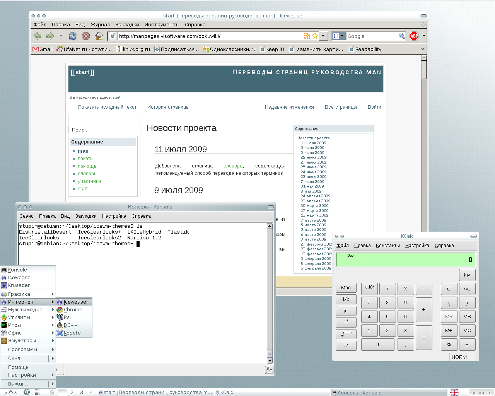

Поделюсь небольшим опытом по переходу с KDE на IceWM. Поскольку жизнь KDE 3.5 фактически закончится тогда, когда закончится поддержка Lenny, то KDE 3.5 скоро не станет. Пришедшая ей на смену среда KDE 4 мне не нравится, поэтому я потихоньку присматриваюсь к другим, более лёгким средам.
При переходе с интегрированных сред на оконные менеджеры сразу же ощущается то, что сам по себе Linux фактически малопригоден в качестве настольной системы. Возникают следующие проблемы:
Интегрированные среды для автоматического монтирования используют HAL. При этом сам демон HAL фактически ничего не монтирует. Он лишь по запросу предоставляет интересующимся программам список подключенных носителей информации. Дальше программы, интегрированные в среду, пользуются собственными подсистемами для доступа к носителям информации.
В KDE эта подсистема называется KIO. В Gnome ранее использовалась подсистема под названием GnomeVFS. В более современных версиях Gnome, начиная с версии 2.22, используется новая подсистема, которая называется GIO. Планировалось, что эта подсистема будет по-настоящему монтировать устройства с помощью подсистемы FUSE. Так ли обстоит дело в настоящее время, я не понял. Отслеживание зависимостей пакета gvfs говорит о том, что FUSE не используется. Однако наличие пакета gvfs-fuse говорит об обратном. Видимо доступны оба механизма или в настоящее время происходит плавный переход с использования одного механизма на использование другого. Поскольку я не пользуюсь Gnome, точнее сказать ничего не могу.
При использовании FUSE монтирование всё-же должно происходить, из чего следует одно довольно важное преимущество - смонтированными ресурсами смогут пользоваться программы, не ориентированные на Gnome.
Монтирование в легких средах, основанных на оконных менеджерах, должно осуществляться пользователем вручную либо с помощью не ориентированных на интегрированные среды дополнительных программ-демонов.
Мною были опробованы демон автоматического монтирования autofs, поведение которого мне показалось довольно странным. Он требует использования отдельного каталога, в котором будут появляться все автоматически смонтированные файловые системы. В этом каталоге не должно быть посторонних каталогов, если они есть - они будут недоступны. Демон автомонтирования autofs показал себя не случшей стороны ещё по той причине, что иногда он попросту не срабатывал! Пока что я отмёл его, как "плохой, не годный" демон.
Конфигурационный файл autofs - /etc/autofs.master:
/auto /etc/auto.misc -timeout=10
Конфигурационный файл autofs - autofs.misc:
floppy -fstype=auto,user,nosuid,sync,umask=000 :/dev/fd0 cdrom -fstype=iso9660,user,nosuid,ro :/dev/hda usb1 -fstype=auto,user,nosuid,sync,umask=000 :/dev/sdb1 usb2 -fstype=auto,user,nosuid,sync,umask=000 :/dev/sdc1
Далее, были опробованы менеджеры монтирования asmounter, wmmount, mountapp. Менеджеры просматривают список доступных точек монтирования в /etc/fstab и предоставляют удобный мышиный интерфейс для монтирования, размонтирования и извлечения сменных накопителей. Все три менеджера монтирования оказались ориентированы на совместное использование с оконными менеджерами AfterStep или WindowsMaker. С другими менеджерами они тоже работают, но в этом случае они выглядят просто как небольшое окно с пиктограммами, а хотелось бы чтобы они встраивались в трей.
Пока что я остановился на небольшом меню, позволяющем осуществлять ручное монтирование, размонтирование сменных носителей с помощью команд pmount и pumount, и извлечение сменных накопителей с помощью eject. Это меню я прописал в файл ~/.icewm/toolbar:
menu "Disks" /usr/share/icons/crystalsvg/16x16/devices/cdrom_unmount.png {
menu "CD" /usr/share/icons/crystalsvg/16x16/devices/cdrom_unmount.png {
prog "Mount CD" /usr/share/icons/crystalsvg/16x16/devices/cdrom_mount.png pmount /mnt/cdrom
prog "Unmount CD" /usr/share/icons/crystalsvg/16x16/devices/cdrom_unmount.png pumount /mnt/cdrom
prog "Eject CD" /usr/share/icons/crystalsvg/16x16/devices/cdrom_unmount.png eject /mnt/cdrom
}
menu "Floppy" /usr/share/icons/crystalsvg/16x16/devices/3floppy_unmount.png {
prog "Mount Floppy" /usr/share/icons/crystalsvg/16x16/devices/3floppy_mount.png pmount /mnt/floppy
prog "Unmount Floppy" /usr/share/icons/crystalsvg/16x16/devices/3floppy_unmount.png pumount /mnt/floppy
}
menu "USB 1" /usr/share/icons/crystalsvg/16x16/devices/usbpendrive_unmount.png {
prog "Mount USB 1" /usr/share/icons/crystalsvg/16x16/devices/usbpendrive_mount.png pmount /mnt/usb1
prog "Unmount USB 1" /usr/share/icons/crystalsvg/16x16/devices/usbpendrive_unmount.png pumount /mnt/usb1
}
menu "USB 2" /usr/share/icons/crystalsvg/16x16/devices/usbpendrive_unmount.png {
prog "Mount USB 2" /usr/share/icons/crystalsvg/16x16/devices/usbpendrive_mount.png pmount /mnt/usb2
prog "Unmount USB 2" /usr/share/icons/crystalsvg/16x16/devices/usbpendrive_unmount.png pumount /mnt/usb2
}
}
А выглядит оно вот так:
Перспективным направлением дальнейших поисков является возможность автомонтирования через подсистему FUSE с помощью пакета afuse. Но пока что вопрос автомонтирования, а самое главное - авторазмонтирования остаётся открытым. Именно из-за того, что авторазмонтирование нужно даже больше, чем автомонтирование, мною отметается возможность воспользоваться привязкой команд монтирования к событиям udev.
Если кое-как, с грехом пополам, проблема монтирования была решена, то с микшированием аудиопотоков всё не столь радужно.
В интегрированных средах Gnome и KDE микшированием звуковых потоков от разных программ занимаются специальные звуковые серверы: ESD в Gnome, aRtsd - в KDE 3.5, Phonon - в KDE 4.
Вообще, архитектура звуковой подсистемы в Linux довольно запутана. Есть звуковые подсистемы OSS и ALSA, работающие с аудиоустройствами напрямую, а есть звуковые серверы ESD, aRtsd, Phonon, Pulse Audio и JACK. Задача первых - вывести звук на аудиокарту, задача вторых - смешать звуки от нескольких программ-источников или распределить их на несколько аудиокарт. Есть ещё звуковая подсистема OpenAL, которая используется для вывода звука в играх.
Довольно неприятным оказалось то, что разные программы умеют работать с разными подсистемами и звуковыми серверами. Может оказаться так, что одна программа умеет работать только с ALSA, а другая - только с aRtsd. При этом программы, включая звуковые серверы, попросту блокируют доступ к аудиоустройству ALSA для других программ.
Я нашёл возможность смешивать аудиопотоки от разных программ прямо в подсистеме ALSA с помощью плагина программного микширования dmix. Для этого необходимо внести изменения в файл /etc/asound.conf. Некоторые источники вообще утверждают, что ALSA начиная с версии 1.0.9 стала сама подключать возможность аппаратного или программного микширования аудиопотоков, но мне добиться автоматической настройки микширования от своей ALSA 1.0.27 не удалось. После внесения необходимых настроек в файл /etc/asound.conf, некоторые программы начали одновременно выводить звук, но другие по-прежнему монопольно захватывают устройства ALSA, так что остальные программы отваливаются с ошибкой доступа.
Это всё становится особенно обидно ещё потому, что в FreeBSD, которая использует собственную реализацию подсистемы OSS, микширование включается изменением всего пары переменных ядра с помощью команды sysctl!
# sysctl hw.snd.pcm0.vchans=4 # sysctl hw.snd.maxautovchans=4
Все эти задачи выполняются в Gnome и KDE встроенными средствами. В IceWM пришлось немного попотеть, прежде чем достичь подобной функциональности.
Ставим sudo:
# aptitude install sudo
В его конфиге прописываем (редактор запускается по команде visudo):
Cmnd_Alias SHUTDOWN=/sbin/shutdown, \ /sbin/halt, \ /sbin/poweroff, \ /sbin/reboot stupin ALL=NOPASSWD: SHUTDOWN
В конфиге ~/.icewm/preferences прописываем:
ShutdownCommand="sudo /sbin/shutdown -h now" RebootCommand="sudo /sbin/shutdown -r now"
В конфиг ~/.icewm/startup прописываем автозагрузку сервера хранителя экрана:
#!/bin/sh xscreensaver -no-splash &
Не забудьте сделать файл исполняемым, например такой командой:
$ chmod +x ~/.icewm/startup
В конфиге ~/.icewm/preferences прописываем:
LockCommand="xscreensaver-command -lock"
Настройка фонового рисунка для корневого окна (экрана) производится в файле ~/.icewm/preferences, в который нужно добавить строку с указанием полного имени фоновой картинки:
DesktopBackgroundImage="/home/stupin/wallpapers/penguins_forever.bmp"
Некоторые программы из состава KDE требуют для своей работы соответствующих сервисов, которые запускаются вместе с KDE. Чтобы они работали, нужно прописать запуск этих сервисов в автозарузку.
В конфиг ~/.icewm/startup можно прописать программы, которые будут загружаться после запуска IceWM.
Я прописал загрузку:
#!/bin/sh kdeinit & kxneur &
Не забудьте сделать файл исполняемым, например такой командой:
$ chmod +x ~/.icewm/startup
Если перед выходом из IceWM необходимо выполнить какой-то сценарий, его можно прописать в ~/.icewm/preferences:
LogoutCommand="команда"
Если сценарий завершения отрабатывает долго, то можно отменить завершение работы, пока сценарий ещё не завершился. Для этого можно прописать специальный отменяющий завершение сценарий:
LogoutCancelCommand="команда"
Для запуска нового сеанса KDE запускает ещё один X-сервер. Я довольно долго пытался разобраться с тонкостями работы протокола XDMCP, чтобы научиться не просто запускать дополнительный X-сервер, но и добиться появления на его экране приглашения ко входу от менеджера дисплеев.
Пока я разбирался с тем, как это сделать, я перепробовал несколько разных менеджеров дисплеев: xdm, gdm, kdm, wdm, slim. Самые приятные на вид из них - это gdm, kdm и slim. Однако настройки gdm и kdm довольно сложные и запутанные, а slim наоборот - не поддерживает некоторых функций. Классической схемой настройки обладают xdm и wdm, но они очень страшно выглядят. Для меня остаётся загадкой, почему до сих пор никто не довёл xdm или wdm до приемлемого внешнего вида. Может быть потому, что всем достаточно gdm и kdm?
В xdm и wdm запуск X-серверов прописывается в файл Xservers, а в kdm и gdm своя запутанная система их запуска. В конце концов я-таки расковырял kdm и настроил автозапуск второго X-сервера. Для этого в файле /etc/kde3/kdm/kdmrc нужно привести одну строчку к следующему виду:
StaticServers=:0,:1
При этом я нашёл способ заставить kdm обслуживать динамически запускаемые X-серверы, но пока не придумал как их распределять по незанятым консолям начиная с vt8.
Вот так вот, путём потери дополнительных ресурсов на постоянный запуск дополнительного X-сервера, была достигнута возможность работать одновременно в двух сеансах графических сред.
Из стандартных тем оформления IceWM, находящихся в пакете icewm-themes мне больше всего приглянулась тема IceCrack2:
Затем я решил поискать дополнительные темы для IceWM в Интернете и нашёл следующую ссылку: http://box-look.org/index.php?xcontentmode=7311&PHPSESSID=0e61faca62183300205af9ced1d4ef6f
Из них мне больше всего приглянулись следующие 7 тем:
EiskristallDesert:
IceClearlooks:
IceClearlooks+:
IceClearlooks2:
LXIceHybrid:
Plastik:
Narciso-1.2:
Я собрал все эти 7 тем в виде deb-пакетов, готовых для установки в систему:
Меню может автоматически создаваться таким же образом, каким оно создаётся в средах Gnome или KDE, из файлов .desktop. Однако я решил дополнить стандартное меню KDE собственным меню, в которое я включил самые часто используемые мной программы:
prog Konsole konsole konsole
prog Iceweasel mozilla-firefox firefox
prog Krusader krusader_user krusader
separator
menu "Графика" gwenview {
prog Gwenview gwenview gwenview
prog KolourPaint kolourpaint kolourpaint
prog KSnapshot ksnapshot ksnapshot
}
menu "Интернет" firefox {
prog Iceweasel /usr/share/pixmaps/iceweasel.png firefox
prog Chrome /opt/google/chrome/product_logo_16.png /opt/google/chrome/chrome --enable-plugins
prog Psi /usr/share/pixmaps/psi.xpm psi
prog DC++ dcpp-32 linuxdcpp
prog Kopete kopete kopete
}
menu "Мультимедиа" mplayer {
prog "KMPlayer" mplayer kmplayer
prog amaroK amarok amarok
prog Kaffeine kaffeine kaffeine
prog K3b k3b k3b
prog KMix kmix kmix
prog KAudioCreator kaudiocreator kaudiocreator
prog ExFalso exfalso exfalso
prog ncmpc amarok konsole --notabbar --nomenubar --noframe --noscrollbar -e ncmpc
}
menu "Утилиты" ark {
prog Ark ark ark
prog KCalc kcalc kcalc
prog Kate kate kate
prog KWrite kwrite kwrite
prog KXNeur kxneur kxneur
prog GnomeCatalog /usr/share/gnomecatalog/pixmaps/gcatalog.xpm gnomecatalog
prog Krusader krusader_user krusader
prog Thunar /usr/share/icons/hicolor/16x16/apps/Thunar.png thunar
prog PCManFM pcmanfm pcmanfm
prog "ДубльГИС" 2gis 2gis
}
menu "Игры" snake4 {
prog "Alien Arena" alien-arena alien-arena
prog Nexuiz nexuiz nexuiz
prog "Open Arena" openarena32 openarena
prog Sauerbraten sauerbraten sauerbraten
prog SDL-Ball sdl-ball sdl-ball
prog SuperTux /usr/share/icons/hicolor/32x32/apps/supertuxkart.xpm supertux
prog Mahjongg gnome-mahjongg mahjongg
prog KNetWalk knetwalk knetwalk
prog PipeWalker PipeWalker pipewalker
prog Snake4 snake4 snake4
prog GnomeTris gnometris.xpm gnometris
prog Celestia /usr/share/pixmaps/celestia.png celestia
}
menu Офис /usr/share/icons/hicolor/16x16/apps/ooo-writer.png {
prog "OpenOffice.org Base" /usr/share/icons/hicolor/16x16/apps/ooo-base.png ooffice -base
prog "OpenOffice.org Calc" /usr/share/icons/hicolor/16x16/apps/ooo-calc.png ooffice -calc
prog "OpenOffice.org Draw" /usr/share/icons/hicolor/16x16/apps/ooo-draw.png ooffice -draw
prog "OpenOffice.org Impress" /usr/share/icons/hicolor/16x16/apps/ooo-impress.png ooffice -impress
prog "OpenOffice.org Math" /usr/share/icons/hicolor/16x16/apps/ooo-math.png ooffice -math
prog "OpenOffice.org Writer" /usr/share/icons/hicolor/16x16/apps/ooo-writer.png ooffice -writer
prog KCHMViewer /usr/share/icons/crystalsvg/48x48/apps/kchmviewer.png kchmviewer
prog DjView4 /usr/share/icons/hicolor/32x32/apps/djvulibre-djview4.xpm djview
prog KPDF /usr/share/icons/hicolor/16x16/apps/kpdf.png kpdf
prog KGhost /usr/share/icons/hicolor/16x16/apps/kghostview.png kghost
prog FBReader FBReader.png fbreader
prog KSocrat /usr/share/icons/locolor/16x16/apps/ksocrat.png ksocrat
}
menu "Эмуляторы" dosbox {
prog WINE wine wine
prog DOSBox dosbox dosbox
prog QEmuLator qemulator.xpm qemulator
}
В общем, можно сделать один простой, но очевидный вывод: среды KDE и Gnome не имеют отношения к Linux. Эти среды часто дублируют функционал ядра Linux таким образом, что Linux станвится просто средством их запуска. Впрочем, и KDE и Gnome пытаются стать многоплатформенными средами. И это вполне успешно им удаётся. Периодически появляются новости, что KDE и Gnome запускаются, например, поверх Windows. KDE если не работает в Mac OS X, то по крайней мере стремится работать в ней.
Пока что остаются нерешёнными два вопроса: микширование звука от нескольких программ и автомонтирование (с авторазмонтированием по таймауту) сменных носителей информации.